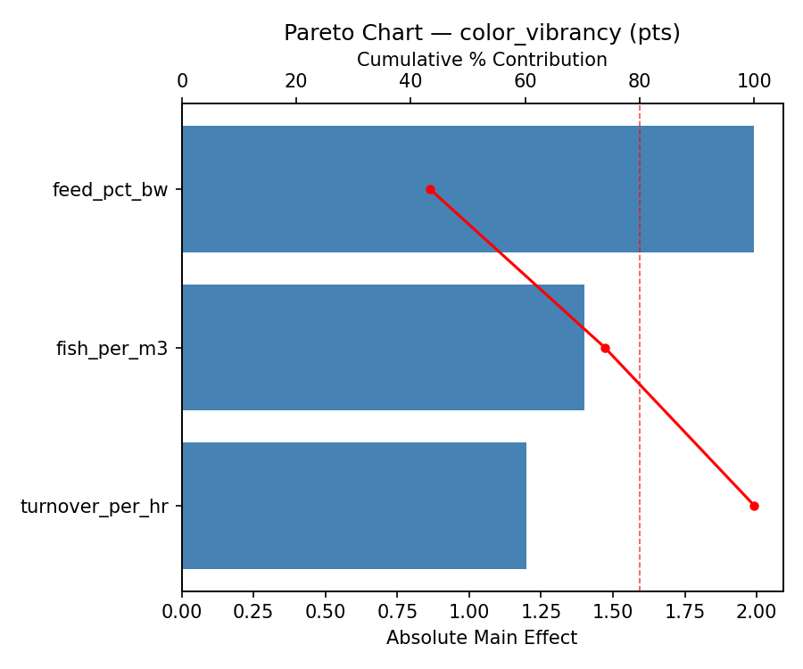
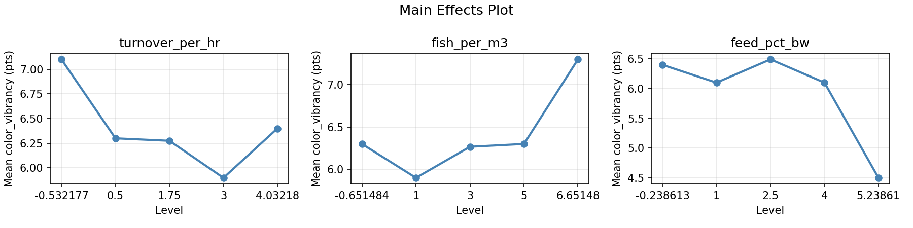
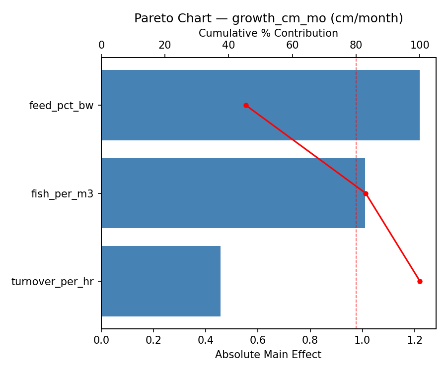
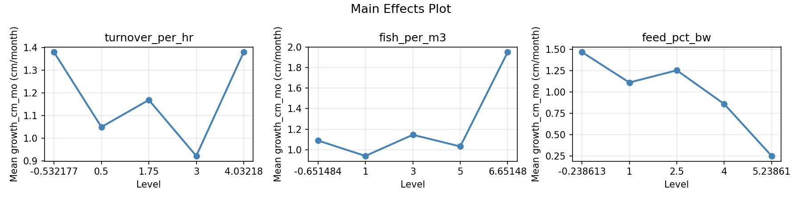
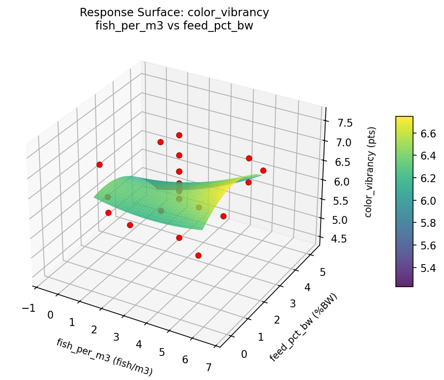
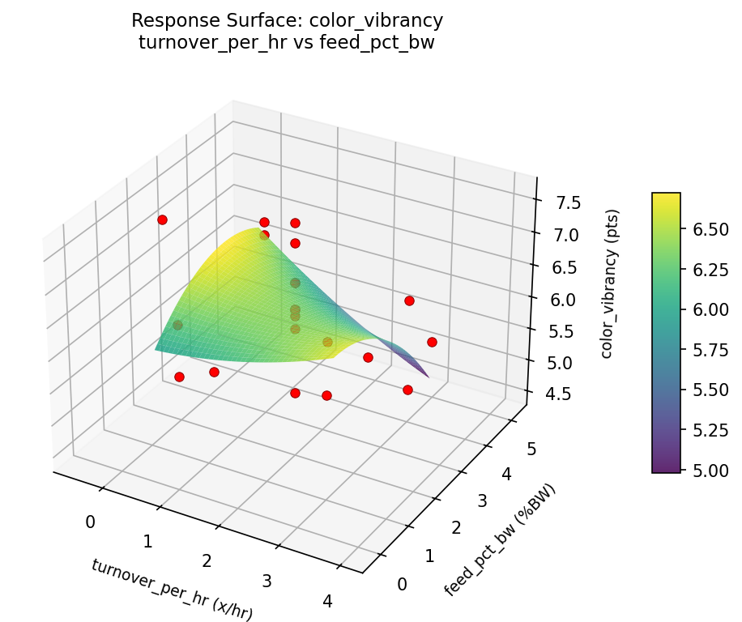
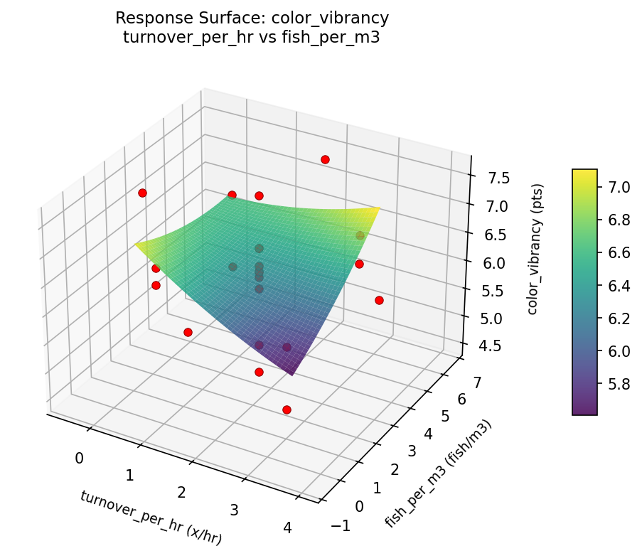
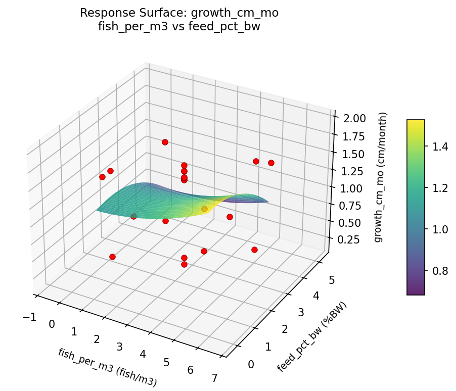
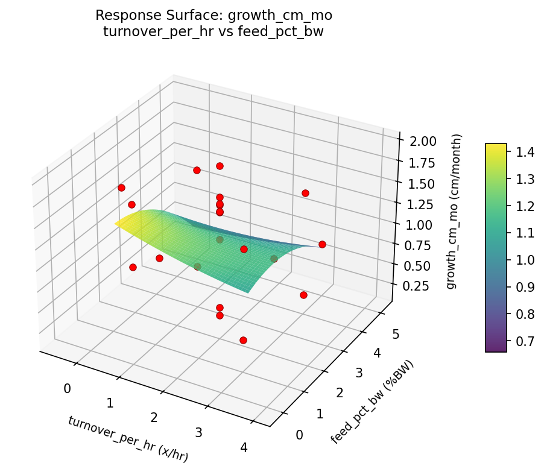
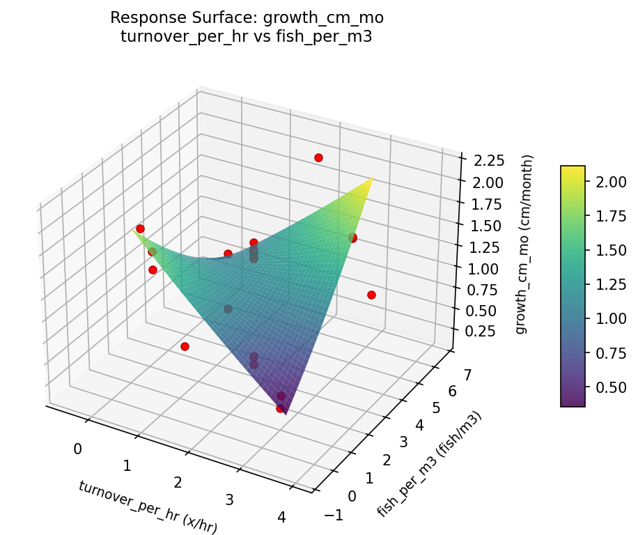

Summary
This experiment investigates koi pond water management. Central composite design to maximize koi coloration and growth by tuning filtration turnover, stocking density, and feeding rate.
The design varies 3 factors: turnover per hr (x/hr), ranging from 0.5 to 3.0, fish per m3 (fish/m3), ranging from 1 to 5, and feed pct bw (%BW), ranging from 1 to 4. The goal is to optimize 2 responses: color vibrancy (pts) (maximize) and growth cm mo (cm/month) (maximize). Fixed conditions held constant across all runs include pond volume = 10m3, filter type = bead.
A Central Composite Design (CCD) was selected to fit a full quadratic response surface model, including curvature and interaction effects. With 3 factors this produces 22 runs including center points and axial (star) points that extend beyond the factorial range.
Quadratic response surface models were fitted to capture potential curvature and factor interactions. The RSM contour plots below visualize how pairs of factors jointly affect each response.
Key Findings
For color vibrancy, the most influential factors were feed pct bw (43.4%), fish per m3 (30.5%), turnover per hr (26.1%). The best observed value was 7.6 (at turnover per hr = 1.75, fish per m3 = 3, feed pct bw = 2.5).
For growth cm mo, the most influential factors were feed pct bw (45.4%), fish per m3 (37.6%), turnover per hr (17.0%). The best observed value was 1.95 (at turnover per hr = 1.75, fish per m3 = 3, feed pct bw = 2.5).
Recommended Next Steps
- Run confirmation experiments at the predicted optimal settings to validate the model.
- Consider whether any fixed factors should be varied in a future study.
Experimental Setup
Factors
| Factor | Low | High | Unit |
|---|
turnover_per_hr | 0.5 | 3.0 | x/hr |
fish_per_m3 | 1 | 5 | fish/m3 |
feed_pct_bw | 1 | 4 | %BW |
Fixed: pond_volume = 10m3, filter_type = bead
Responses
| Response | Direction | Unit |
|---|
color_vibrancy | ↑ maximize | pts |
growth_cm_mo | ↑ maximize | cm/month |
Configuration
{
"metadata": {
"name": "Koi Pond Water Management",
"description": "Central composite design to maximize koi coloration and growth by tuning filtration turnover, stocking density, and feeding rate"
},
"factors": [
{
"name": "turnover_per_hr",
"levels": [
"0.5",
"3.0"
],
"type": "continuous",
"unit": "x/hr"
},
{
"name": "fish_per_m3",
"levels": [
"1",
"5"
],
"type": "continuous",
"unit": "fish/m3"
},
{
"name": "feed_pct_bw",
"levels": [
"1",
"4"
],
"type": "continuous",
"unit": "%BW"
}
],
"fixed_factors": {
"pond_volume": "10m3",
"filter_type": "bead"
},
"responses": [
{
"name": "color_vibrancy",
"optimize": "maximize",
"unit": "pts"
},
{
"name": "growth_cm_mo",
"optimize": "maximize",
"unit": "cm/month"
}
],
"settings": {
"operation": "central_composite",
"test_script": "use_cases/176_pond_koi_health/sim.sh"
}
}
Experimental Matrix
The Central Composite Design produces 22 runs. Each row is one experiment with specific factor settings.
| Run | turnover_per_hr | fish_per_m3 | feed_pct_bw |
|---|
| 1 | 1.75 | 3 | 2.5 |
| 2 | 3 | 1 | 4 |
| 3 | 0.5 | 5 | 1 |
| 4 | 1.75 | 6.65148 | 2.5 |
| 5 | 1.75 | 3 | 2.5 |
| 6 | -0.532177 | 3 | 2.5 |
| 7 | 1.75 | 3 | -0.238613 |
| 8 | 1.75 | 3 | 2.5 |
| 9 | 3 | 5 | 1 |
| 10 | 4.03218 | 3 | 2.5 |
| 11 | 1.75 | 3 | 2.5 |
| 12 | 1.75 | -0.651484 | 2.5 |
| 13 | 1.75 | 3 | 2.5 |
| 14 | 0.5 | 1 | 4 |
| 15 | 1.75 | 3 | 2.5 |
| 16 | 3 | 1 | 1 |
| 17 | 1.75 | 3 | 5.23861 |
| 18 | 3 | 5 | 4 |
| 19 | 1.75 | 3 | 2.5 |
| 20 | 0.5 | 1 | 1 |
| 21 | 0.5 | 5 | 4 |
| 22 | 1.75 | 3 | 2.5 |
Step-by-Step Workflow
1
Preview the design
$ python doe.py info --config use_cases/176_pond_koi_health/config.json
2
Generate the runner script
$ python doe.py generate --config use_cases/176_pond_koi_health/config.json \
--output use_cases/176_pond_koi_health/results/run.sh --seed 42
3
Execute the experiments
$ bash use_cases/176_pond_koi_health/results/run.sh
4
Analyze results
$ python doe.py analyze --config use_cases/176_pond_koi_health/config.json
5
Get optimization recommendations
$ python doe.py optimize --config use_cases/176_pond_koi_health/config.json
6
Generate the HTML report
$ python doe.py report --config use_cases/176_pond_koi_health/config.json \
--output use_cases/176_pond_koi_health/results/report.html
Features Exercised
| Feature | Value |
|---|
| Design type | central_composite |
| Factor types | continuous (all 3) |
| Arg style | double-dash |
| Responses | 2 (color_vibrancy ↑, growth_cm_mo ↑) |
| Total runs | 22 |
Analysis Results
Generated from actual experiment runs using the DOE Helper Tool.
Response: color_vibrancy
Top factors: feed_pct_bw (43.4%), fish_per_m3 (30.5%), turnover_per_hr (26.1%).
Pareto Chart

Main Effects Plot

Response: growth_cm_mo
Top factors: feed_pct_bw (45.4%), fish_per_m3 (37.6%), turnover_per_hr (17.0%).
Pareto Chart

Main Effects Plot

Response Surface Plots
3D surfaces fitted with quadratic RSM. Red dots are observed data points.
color vibrancy fish per m3 vs feed pct bw

color vibrancy turnover per hr vs feed pct bw

color vibrancy turnover per hr vs fish per m3

growth cm mo fish per m3 vs feed pct bw

growth cm mo turnover per hr vs feed pct bw

growth cm mo turnover per hr vs fish per m3

Full Analysis Output
RSM surface: rsm_color_vibrancy_turnover_per_hr_vs_fish_per_m3.png
RSM surface: rsm_color_vibrancy_turnover_per_hr_vs_feed_pct_bw.png
RSM surface: rsm_color_vibrancy_fish_per_m3_vs_feed_pct_bw.png
RSM surface: rsm_growth_cm_mo_turnover_per_hr_vs_fish_per_m3.png
RSM surface: rsm_growth_cm_mo_turnover_per_hr_vs_feed_pct_bw.png
RSM surface: rsm_growth_cm_mo_fish_per_m3_vs_feed_pct_bw.png
=== Main Effects: color_vibrancy ===
Factor Effect Std Error % Contribution
--------------------------------------------------------------
feed_pct_bw 1.9917 0.1626 43.4%
fish_per_m3 1.4000 0.1626 30.5%
turnover_per_hr 1.2000 0.1626 26.1%
=== Summary Statistics: color_vibrancy ===
turnover_per_hr:
Level N Mean Std Min Max
------------------------------------------------------------
-0.532177 1 7.1000 0.0000 7.1000 7.1000
0.5 4 6.3000 0.5715 5.5000 6.8000
1.75 12 6.2750 0.8551 4.5000 7.6000
3 4 5.9000 0.8042 4.8000 6.7000
4.03218 1 6.4000 0.0000 6.4000 6.4000
fish_per_m3:
Level N Mean Std Min Max
------------------------------------------------------------
-0.651484 1 6.3000 0.0000 6.3000 6.3000
1 4 5.9000 0.7874 4.8000 6.6000
3 12 6.2667 0.8359 4.5000 7.6000
5 4 6.3000 0.5944 5.5000 6.8000
6.65148 1 7.3000 0.0000 7.3000 7.3000
feed_pct_bw:
Level N Mean Std Min Max
------------------------------------------------------------
-0.238613 1 6.4000 0.0000 6.4000 6.4000
1 4 6.1000 0.5164 5.5000 6.7000
2.5 12 6.4917 0.6748 5.0000 7.6000
4 4 6.1000 0.9018 4.8000 6.8000
5.23861 1 4.5000 0.0000 4.5000 4.5000
=== Main Effects: growth_cm_mo ===
Factor Effect Std Error % Contribution
--------------------------------------------------------------
feed_pct_bw 1.2200 0.1218 45.4%
fish_per_m3 1.0100 0.1218 37.6%
turnover_per_hr 0.4575 0.1218 17.0%
=== Summary Statistics: growth_cm_mo ===
turnover_per_hr:
Level N Mean Std Min Max
------------------------------------------------------------
-0.532177 1 1.3800 0.0000 1.3800 1.3800
0.5 4 1.0500 0.6291 0.2300 1.6400
1.75 12 1.1692 0.6017 0.1600 1.9500
3 4 0.9225 0.6697 0.2700 1.5100
4.03218 1 1.3800 0.0000 1.3800 1.3800
fish_per_m3:
Level N Mean Std Min Max
------------------------------------------------------------
-0.651484 1 1.0900 0.0000 1.0900 1.0900
1 4 0.9400 0.6951 0.2700 1.6400
3 12 1.1458 0.5600 0.1600 1.5900
5 4 1.0325 0.6052 0.2300 1.5100
6.65148 1 1.9500 0.0000 1.9500 1.9500
feed_pct_bw:
Level N Mean Std Min Max
------------------------------------------------------------
-0.238613 1 1.4700 0.0000 1.4700 1.4700
1 4 1.1125 0.5614 0.4200 1.6400
2.5 12 1.2558 0.5262 0.1600 1.9500
4 4 0.8600 0.7053 0.2300 1.5100
5.23861 1 0.2500 0.0000 0.2500 0.2500
Pareto chart (color_vibrancy): use_cases/176_pond_koi_health/results/analysis/pareto_color_vibrancy.png
Pareto chart (growth_cm_mo): use_cases/176_pond_koi_health/results/analysis/pareto_growth_cm_mo.png
Main effects (color_vibrancy): use_cases/176_pond_koi_health/results/analysis/main_effects_color_vibrancy.png
Main effects (growth_cm_mo): use_cases/176_pond_koi_health/results/analysis/main_effects_growth_cm_mo.png
Optimization Recommendations
=== Optimization: color_vibrancy ===
Direction: maximize
Best observed run: #12
turnover_per_hr = 1.75
fish_per_m3 = 3
feed_pct_bw = 2.5
Value: 7.6
RSM Model (linear, R² = 0.0193, Adj R² = -0.1442):
Coefficients:
intercept +6.2545
turnover_per_hr +0.0780
fish_per_m3 +0.0975
feed_pct_bw +0.0210
RSM Model (quadratic, R² = 0.4997, Adj R² = 0.1244):
Coefficients:
intercept +6.7638
turnover_per_hr +0.0780
fish_per_m3 +0.0975
feed_pct_bw +0.0210
turnover_per_hr*fish_per_m3 -0.0875
turnover_per_hr*feed_pct_bw +0.2125
fish_per_m3*feed_pct_bw -0.3625
turnover_per_hr^2 -0.4196
fish_per_m3^2 -0.2396
feed_pct_bw^2 -0.1046
Curvature analysis:
turnover_per_hr coef=-0.4196 concave (has a maximum)
fish_per_m3 coef=-0.2396 concave (has a maximum)
feed_pct_bw coef=-0.1046 concave (has a maximum)
Notable interactions:
fish_per_m3*feed_pct_bw coef=-0.3625 (antagonistic)
Predicted optimum (from quadratic model):
turnover_per_hr = 1.75
fish_per_m3 = 3
feed_pct_bw = 2.5
Predicted value: 6.7638
Model quality: Weak fit — consider adding center points or using a different design.
Factor importance:
1. turnover_per_hr (effect: 1.8, contribution: 45.9%)
2. feed_pct_bw (effect: 1.4, contribution: 35.8%)
3. fish_per_m3 (effect: 0.7, contribution: 18.2%)
=== Optimization: growth_cm_mo ===
Direction: maximize
Best observed run: #2
turnover_per_hr = 1.75
fish_per_m3 = 3
feed_pct_bw = 2.5
Value: 1.95
RSM Model (linear, R² = 0.0473, Adj R² = -0.1115):
Coefficients:
intercept +1.1218
turnover_per_hr +0.0232
fish_per_m3 +0.1279
feed_pct_bw +0.0721
RSM Model (quadratic, R² = 0.2651, Adj R² = -0.2861):
Coefficients:
intercept +1.3848
turnover_per_hr +0.0232
fish_per_m3 +0.1279
feed_pct_bw +0.0721
turnover_per_hr*fish_per_m3 -0.1212
turnover_per_hr*feed_pct_bw -0.0138
fish_per_m3*feed_pct_bw -0.2412
turnover_per_hr^2 -0.1145
fish_per_m3^2 -0.1175
feed_pct_bw^2 -0.1625
Curvature analysis:
feed_pct_bw coef=-0.1625 concave (has a maximum)
fish_per_m3 coef=-0.1175 concave (has a maximum)
turnover_per_hr coef=-0.1145 concave (has a maximum)
Predicted optimum (from linear model):
turnover_per_hr = 1.75
fish_per_m3 = 6.65148
feed_pct_bw = 2.5
Predicted value: 1.3553
Model quality: Weak fit — consider adding center points or using a different design.
Factor importance:
1. turnover_per_hr (effect: 1.3, contribution: 37.3%)
2. feed_pct_bw (effect: 1.2, contribution: 34.5%)
3. fish_per_m3 (effect: 1.0, contribution: 28.2%)